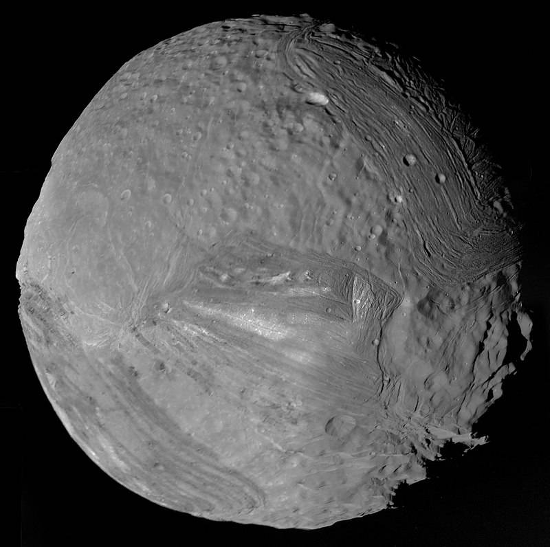

Uranus
Uranus is the seventh planet from the Sun and an ice giant composed primarily of water, ammonia, and methane. Unique among the planets, Uranus rotates on an extreme axial tilt of nearly 98 degrees, causing dramatic light and seasonal changes. |